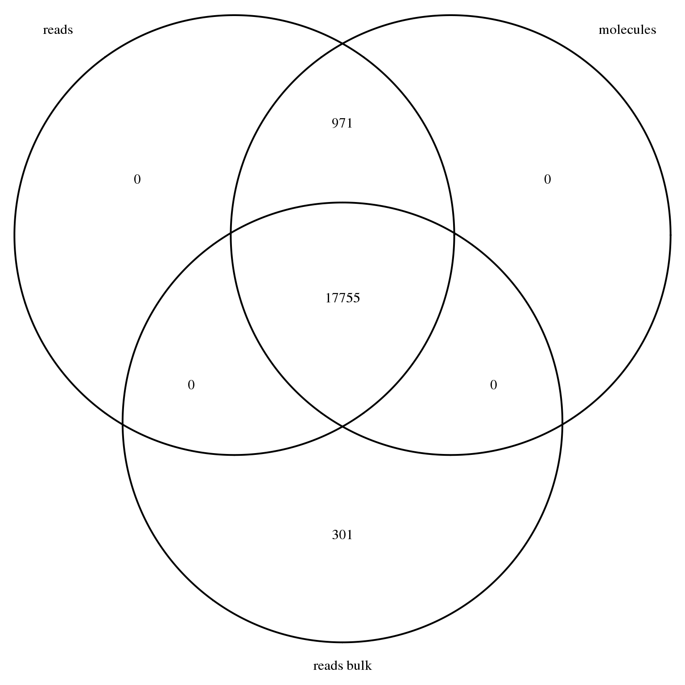

Last updated: 2016-02-22
Code version: c583b1dbf009e01374eca3103be81ca554fd7fb1
library("data.table")
library("dplyr")
library("VennDiagram")This file converts the gene counts results from the analysis pipeline from a sample-by-gene matrix into a standard gene-x-sample matrix. It also creates some annotation files and removes all genes with no observed sequencing data in our experiment.
Specifically, it creates the following files:
Import raw read counts for single cell samples.
reads_raw <- fread("../data/reads-raw-single-per-sample.txt")
setDF(reads_raw)Create annotation file for single cell samples.
anno <- reads_raw %>%
select(individual:well) %>%
mutate(batch = paste(individual, replicate, sep = "."),
sample_id = paste(batch, well, sep = "."))
head(anno) individual replicate well batch sample_id
1 NA19098 r1 A01 NA19098.r1 NA19098.r1.A01
2 NA19098 r1 A02 NA19098.r1 NA19098.r1.A02
3 NA19098 r1 A03 NA19098.r1 NA19098.r1.A03
4 NA19098 r1 A04 NA19098.r1 NA19098.r1.A04
5 NA19098 r1 A05 NA19098.r1 NA19098.r1.A05
6 NA19098 r1 A06 NA19098.r1 NA19098.r1.A06Transpose the matrix so that it is gene-x-sample.
reads <- reads_raw %>%
select(starts_with("ENSG"), starts_with("ERCC")) %>%
t
colnames(reads) <- anno$sample_id
reads[1:5, 1:5] NA19098.r1.A01 NA19098.r1.A02 NA19098.r1.A03
ENSG00000186092 0 0 0
ENSG00000237683 0 0 0
ENSG00000235249 0 0 0
ENSG00000185097 0 0 0
ENSG00000269831 0 0 0
NA19098.r1.A04 NA19098.r1.A05
ENSG00000186092 0 0
ENSG00000237683 44 0
ENSG00000235249 0 0
ENSG00000185097 0 0
ENSG00000269831 0 0Import raw molecule counts for single cell samples.
molecules_raw <- fread("../data/molecules-raw-single-per-sample.txt")
setDF(molecules_raw)Confirm single cell samples in reads and molecules files are in the same order.
stopifnot(anno$individual == molecules_raw$individual,
anno$replicate == molecules_raw$replicate,
anno$well == molecules_raw$well)Transpose the matrix so that it is gene-x-sample.
molecules <- molecules_raw %>%
select(starts_with("ENSG"), starts_with("ERCC")) %>%
t
colnames(molecules) <- anno$sample_id
molecules[1:5, 1:5] NA19098.r1.A01 NA19098.r1.A02 NA19098.r1.A03
ENSG00000186092 0 0 0
ENSG00000237683 0 0 0
ENSG00000235249 0 0 0
ENSG00000185097 0 0 0
ENSG00000269831 0 0 0
NA19098.r1.A04 NA19098.r1.A05
ENSG00000186092 0 0
ENSG00000237683 1 0
ENSG00000235249 0 0
ENSG00000185097 0 0
ENSG00000269831 0 0Import raw read counts for bulk samples.
reads_bulk_raw <- fread("../data/reads-raw-bulk-per-sample.txt")
setDF(reads_bulk_raw)Create annotation file for bulk samples.
anno_bulk <- reads_bulk_raw %>%
select(individual:well) %>%
mutate(batch = paste(individual, replicate, sep = "."),
sample_id = paste(batch, well, sep = "."))
head(anno_bulk) individual replicate well batch sample_id
1 NA19098 r1 bulk NA19098.r1 NA19098.r1.bulk
2 NA19098 r2 bulk NA19098.r2 NA19098.r2.bulk
3 NA19098 r3 bulk NA19098.r3 NA19098.r3.bulk
4 NA19101 r1 bulk NA19101.r1 NA19101.r1.bulk
5 NA19101 r2 bulk NA19101.r2 NA19101.r2.bulk
6 NA19101 r3 bulk NA19101.r3 NA19101.r3.bulkTranspose the matrix so that it is gene-x-sample.
reads_bulk <- reads_bulk_raw %>%
select(starts_with("ENSG"), starts_with("ERCC")) %>%
t
colnames(reads_bulk) <- anno_bulk$sample_id
reads_bulk[1:5, 1:5] NA19098.r1.bulk NA19098.r2.bulk NA19098.r3.bulk
ENSG00000186092 0 0 0
ENSG00000237683 51 65 40
ENSG00000235249 0 0 0
ENSG00000185097 0 0 0
ENSG00000269831 0 0 0
NA19101.r1.bulk NA19101.r2.bulk
ENSG00000186092 0 0
ENSG00000237683 58 42
ENSG00000235249 0 0
ENSG00000185097 0 0
ENSG00000269831 0 0Not all of the 20419 genes were observed in the experiment.
stopifnot(rownames(reads_bulk) == rownames(reads),
rownames(reads) == rownames(molecules))
genes_observed_reads_bulk <- rownames(reads_bulk)[rowSums(reads_bulk) > 0]
genes_observed_reads <- rownames(reads)[rowSums(reads) > 0]
genes_observed_molecules <- rownames(molecules)[rowSums(molecules) > 0]
stopifnot(genes_observed_molecules %in% genes_observed_reads)17231 genes had at least one observation in the single cell read data, 17229 genes had at least one observation in the single cell molecule data, and 17569 genes had at least one observation in the bulk read data. As expected, all genes with at least one observed molecule in at least one single cell also had at least one observed read in at least one single cell.
genes_venn <- venn.diagram(x = list("reads" = genes_observed_reads,
"molecules" = genes_observed_molecules,
"reads bulk" = genes_observed_reads_bulk),
filename = NULL, euler.d = FALSE, scaled = FALSE)
grid.newpage()
grid.draw(genes_venn)
We remove all genes with no observed read in either the bulk or single cell samples.
genes_observed <- union(genes_observed_reads, genes_observed_reads_bulk)
reads <- reads[rownames(reads) %in% genes_observed, ]
molecules <- molecules[rownames(molecules) %in% genes_observed, ]
reads_bulk <- reads_bulk[rownames(reads_bulk) %in% genes_observed, ]This leaves a total of 18028 genes.
Output annotation files.
write.table(anno, "../data/annotation.txt", quote = FALSE, sep = "\t",
row.names = FALSE)
write.table(anno_bulk, "../data/annotation-bulk.txt", quote = FALSE, sep = "\t",
row.names = FALSE)Output read counts.
write.table(reads, "../data/reads.txt", quote = FALSE, sep = "\t",
col.names = NA)
write.table(reads_bulk, "../data/reads-bulk.txt", quote = FALSE, sep = "\t",
col.names = NA)Output molecule counts.
write.table(molecules, "../data/molecules.txt", quote = FALSE, sep = "\t",
col.names = NA)sessionInfo()R version 3.2.0 (2015-04-16)
Platform: x86_64-unknown-linux-gnu (64-bit)
locale:
[1] LC_CTYPE=en_US.UTF-8 LC_NUMERIC=C
[3] LC_TIME=en_US.UTF-8 LC_COLLATE=en_US.UTF-8
[5] LC_MONETARY=en_US.UTF-8 LC_MESSAGES=en_US.UTF-8
[7] LC_PAPER=en_US.UTF-8 LC_NAME=C
[9] LC_ADDRESS=C LC_TELEPHONE=C
[11] LC_MEASUREMENT=en_US.UTF-8 LC_IDENTIFICATION=C
attached base packages:
[1] grid stats graphics grDevices utils datasets methods
[8] base
other attached packages:
[1] VennDiagram_1.6.9 dplyr_0.4.2 data.table_1.9.4 knitr_1.10.5
loaded via a namespace (and not attached):
[1] Rcpp_0.12.0 magrittr_1.5 R6_2.1.1 stringr_1.0.0
[5] httr_0.6.1 plyr_1.8.3 tools_3.2.0 parallel_3.2.0
[9] DBI_0.3.1 htmltools_0.2.6 lazyeval_0.1.10 yaml_2.1.13
[13] digest_0.6.8 assertthat_0.1 reshape2_1.4.1 formatR_1.2
[17] bitops_1.0-6 RCurl_1.95-4.6 evaluate_0.7 rmarkdown_0.6.1
[21] stringi_0.4-1 chron_2.3-45